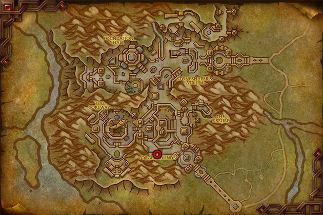

This War Within Inscription leveling guide will walk you through the quickest and easiest way to level your Khaz Algar Inscription skill from 1 to 100.
This War Within Inscription leveling guide will walk you through the quickest and easiest way to level your Khaz Algar Inscription skill from 1 to 100.
Pairing Inscription with Herbalism is highly recommended, as it can save you a significant amount of gold by allowing you to gather the necessary herbs yourself. If you plan on leveling Herbalism, be sure to check out my Herbalism leveling guide.
Inscription Trainer
You can find the trainer and the Inscription crafting table in Dornogal.

Shopping List
This is the list of materials needed to level Inscription to 100.
- 450x
 Mycobloom
Mycobloom - 250x
 Luredrop
Luredrop - 100x
 Arathor's Spear
Arathor's Spear - 20x
 Orbinid
Orbinid - 20x
 Blessing Blossom
Blessing Blossom - 22x
 Viridescent Spores
Viridescent Spores - 12x
 Leyline Residue
Leyline Residue
Leveling Khaz Algar Inscription
Racial Bonuses
Nightborne characters have +5 Inscription skill because of their passive, and Kul Tiran characters have +2. Any extra Inscription skill means recipes stay orange for more points. You can save some gold by doing lower-level recipes for more points.
1 - 20
Use  Khaz Algar Milling in your profession spell book to mill these herbs:
Khaz Algar Milling in your profession spell book to mill these herbs:
- 450x Mycobloom
- 250x Luredrop
- 20x Orbinid
- 20x Blessing Blossom
Getting Some Profession Equipment
Since you'll be crafting a lot of inks in the next step, it's smart to buy the green profession equipment from the Auction House first. This might save you some gold with Multicraft and Resourcefulness procs. They aren't too expensive to make, and you'll eventually need them, so it makes sense to get them now. Don't invest too much in these at first; the prices will likely drop quickly. Start with a lower-quality version for now, and you can upgrade to a max-quality one later.
You can craft the  Lightweight Scribe's Quill yourself once you reach 25, but you can probably buy a higher quality one from the Auction.
Lightweight Scribe's Quill yourself once you reach 25, but you can probably buy a higher quality one from the Auction.
I'd recommend buying  Lightweight Scribe's Quill with Resourcefulness or Multicraft. Both are useful but I'd get one with Resourcefulness since that's more useful once you start doing crafting orders, or you can just buy both and swap between them depending on what you are doing.
Lightweight Scribe's Quill with Resourcefulness or Multicraft. Both are useful but I'd get one with Resourcefulness since that's more useful once you start doing crafting orders, or you can just buy both and swap between them depending on what you are doing.
| Equipment | Slot | Crafted by | Reagents |
|---|---|---|---|
| Accessory 1 | Jewelcrafting (25) | 4x | |
| Accessory 2 | Jewelcrafting (25) | 4x | |
| Tool | Inscription (25) | 8x |
20 - 40
 Distilled Algari Freshwater is sold by the Inscription supply vendor near your trainer. Use Shift+Left Click to buy more than one. You will need 1720x
Distilled Algari Freshwater is sold by the Inscription supply vendor near your trainer. Use Shift+Left Click to buy more than one. You will need 1720x  Distilled Algari Freshwater in total.
Distilled Algari Freshwater in total.
Craft these reagents in the same order as they are listed.
- 61x
 Apricate Ink - 305x Luredrop Pigment, 610x Nacreous Pigment
Apricate Ink - 305x Luredrop Pigment, 610x Nacreous Pigment - 5x
 Shadow Ink - 25x Orbinid Pigment, 25x Blossom Pigment
Shadow Ink - 25x Orbinid Pigment, 25x Blossom Pigment - 20x
 Boundless Cipher - 100x Arathor's Spear, 40x Apricate Ink
Boundless Cipher - 100x Arathor's Spear, 40x Apricate Ink
You'll need all of these later to level Inscription, so be sure to keep them. You'll likely need more than what I've listed here, but it's better to buy the extras later when you actually need them. There are different recipes you can craft, and some might turn out to be cheaper.
If you didn't reach 40, just craft anything that gives skill points and can give you "First Craft Bonus".
Inscription Specializations
When you hit 25, you will unlock Inscription specializations. Be sure to learn Pursuit of Knowledge as your first specialization! This will teach you the  Algari Treatise on Inscription recipe that you will use for leveling later.
Algari Treatise on Inscription recipe that you will use for leveling later.
You'll eventually be able to learn all four specializations, so there's no need to worry about your initial choice. You'll need 50 skill points to unlock the second specialization, 60 for the third and 75 for the fourth.
I suggest checking out my War Within Inscription Specialization Guide. It covers every specialization in detail, and I also include some example builds to help you get started.
TWW Inscription Specialization Guide and Builds
40 - 42
 Fresh Parchment is sold by the Inscription supply vendor near your trainer.
Fresh Parchment is sold by the Inscription supply vendor near your trainer.
Craft these two to get your First Craft bonus while they are orange.
1x  Algari Missive of the Fireflash - 5x Viridescent Spores, 1x Boundless Cipher, 1x Apricate Ink
Algari Missive of the Fireflash - 5x Viridescent Spores, 1x Boundless Cipher, 1x Apricate Ink
1x  Algari Missive of the Harmonious - 5x Viridescent Spores, 1x Boundless Cipher, 1x Apricate Ink
Algari Missive of the Harmonious - 5x Viridescent Spores, 1x Boundless Cipher, 1x Apricate Ink
42 - 45
3x  Algari Treatise on Inscription - 6x Leyline Residue, 3x Boundless Cipher, 6x Apricate Ink
Algari Treatise on Inscription - 6x Leyline Residue, 3x Boundless Cipher, 6x Apricate Ink
If you didn't unlock Pursuit of Knowledge as your first specialization, then you will have to make Missives until 50. Be sure to unlock it as your second specialization!
45 - 47
Learn new recipes then craft these two.
1x  Algari Missive of the Peerless - 5x Viridescent Spores, 1x Boundless Cipher, 1x Apricate Ink
Algari Missive of the Peerless - 5x Viridescent Spores, 1x Boundless Cipher, 1x Apricate Ink
1x  Algari Missive of the Quickblade - 5x Viridescent Spores, 1x Boundless Cipher, 1x Apricate Ink
Algari Missive of the Quickblade - 5x Viridescent Spores, 1x Boundless Cipher, 1x Apricate Ink
47 - 51
Craft three Treatise.
3x  Algari Treatise on Inscription - 6x Leyline Residue, 3x Boundless Cipher, 6x Apricate Ink
Algari Treatise on Inscription - 6x Leyline Residue, 3x Boundless Cipher, 6x Apricate Ink
Then learn the Vantus Rune recipe from your trainer and craft one to get your First Craft bonus.
1x Vantus Rune: Nerub-ar Palace - 2x Viridescent Spores, 5x Shadow Ink, 5x Apricate Ink
51 - 100
As you craft the  Algari Treatise on Inscription, you'll start discovering Treatises for other professions (if you haven't already). Both the Algari Treatise on Inscription and the other Treatises will continue to grant skill points all the way up to 100.
Algari Treatise on Inscription, you'll start discovering Treatises for other professions (if you haven't already). Both the Algari Treatise on Inscription and the other Treatises will continue to grant skill points all the way up to 100.
Start with the Treatise on Inscription until you discover a useful recipe for your second profession or alts. Once you do, switch to crafting Treatises that you or your alts can actually use. Treatises are Warbound, so you can mail them to your other characters instead of using Personal Crafting Orders. This makes it easier to distribute them across your alts. I wouldn't recommend making all 60 from Inscription alone, as it would take over a year to use them all.
To reach level 100, you'll likely need to craft around 60 Treatises in total. The Treatise recipes will turn green for the last 10 points, so I can't give an exact number of how many you'll need to craft to finish leveling.
Alternative for the last few points
The last few point could be a bit slow if you are unlucky with the skill gains. So, if you have any of the weapon recipes unlocked from specializations, you can try completing a few crafting orders. I'd recommend stopping at 91, 94 or 97. Each weapon recipe give 3 skill points, so you would only have to complete 1-3 of them.
All of these recipes requires a Spark of Omen, a Bind on Pickup (BoP) crafting reagent that cannot be purchased from the Auction House. Since you can only obtain one Spark of Omen every two weeks, you should use the crafting order system to level with these recipes.
| Item | Recipe Source |
|---|---|
| Vagabond's Careful Crutch | Specialization: Careful Carvings - Staves |
| Vagabond's Bounding Baton | Specialization: Careful Carvings - Staves (5) |
| Vagabond's Torch | Specialization: Careful Carvings - Torches |
Once you get the recipes from specializations, you can start looking for Crafting Orders.
Patron Orders
Fortunately, the new Patron crafting orders make leveling a bit easier. You will frequently receive epic armor crafting orders, though you may not be able to complete some of them until you acquire more knowledge points.
These orders are player-specific, so other players can't complete them. Consider them like Personal Orders sent to you by NPCs. However, they are randomly generated, so it's not guaranteed that you will receive orders for recipes you can currently craft.
Public Orders
When you open the Crafting Orders tab, make sure to hit "Search" in the top left corner on the Public Orders tab, they won't load automatically. You probably won't see many crafting orders because players immediately complete them when they are posted.
Unfortunately, public crafting orders haven't gained much popularity among players in in The War Within. Many players prefer guild or personal crafting orders for better control over item quality and materials. The unpredictability of public orders deters players from using this system, resulting in very few available public orders.